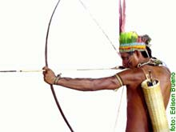

|  |
O critério para a participação desses jogos é a força cultural das etnias, considerando tradições, como
a língua, a dança, os rituais, os cantos, as pinturas corporais, o artesanato e os esportes
tradicionais.A primeira edição ocorreu em Goiânia, em outubro de 1996, com a presença de 25 etnias e mais de 400
atletas, e contou com a presença de Pelé, que incluiu o evento no calendário da Secretaria Nacional do
Esporte.Os II Jogos foram realizados na cidade de Guairá, no Paraná, em outubro de 1999, e teve a participação
de 31 etnias e mais de 600 atletas.
Alguns dos esportes praticados são: Arco e flecha, Cabo de guerra, Canoagem, Atletismo, corrida com tora, futebol, arremesso de lança, luta corporal, entre outras. |
| Fonte http://www.educacaofisica.seed.pr.gov.br/modules/conteudo/conteudo.php?conteudo=218 | |